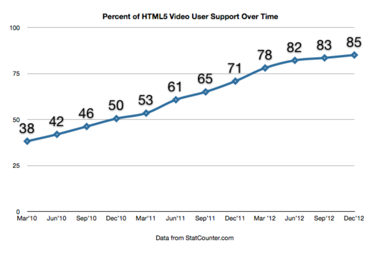
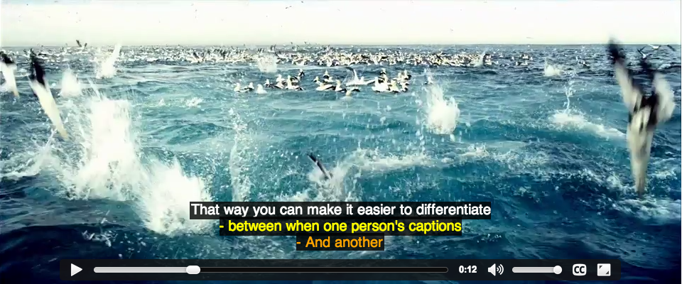
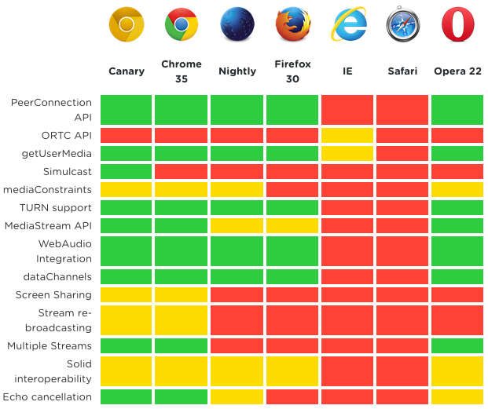
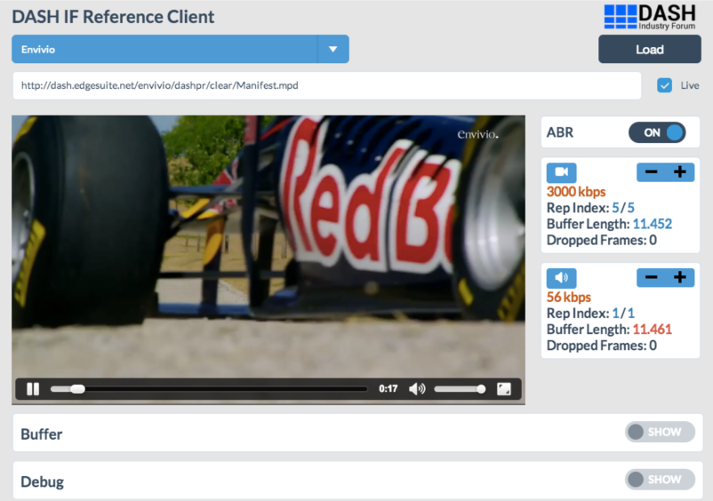

HTML5 <video>
kicking plugins to the curb
Developer Week 2014

Still a little awkward
...but getting waaaay better
A brief history lesson
With examples from eBaum's World
The Dark Ages
Right-click, download as.
Circa 2000: Plugin-mania
Circa 2008: Flash
Circa 2015: HTML5


Up and to the right
What about the last 15%?!
Why use HTML5 now?
- It's the future!
- Runs natively in the browser
- Cleaner code
The dream
The reality
Already well supported
No (17%)
Yes (83%)
Flash is was ubiquitous
So what brought about the shift to HTML5 video at all?
The Format Wars
Open
Closed
Easy to use API
The Future
Batteries included, no plugins necessary*
* most some of the time
WebVTT
- Web Video Text Tracks
- Main use is captioning
- Plain text
- Specified in the
<track>element
WEBVTT
00:00.001 --> 00:04.000
Awwwww yeah.
00:04.001 --> 00:06.000
caption caption caption
00:06.001 --> 00:12.000
You're not limited to one line either
- you can span multiple lines
- just make sure none of those lines are empty
00:12.001 --> 00:16.000
Usually you don't want timestamps that overlap
00:15.000 --> 00:19.000
But it's ok if they do.
WebVTT Cue Components
WEBVTT
00:00.001 --> 00:03.000
Captions are cool
00:03.001 --> 00:06.000
Especially when styled
00:06.001 --> 00:12.000
Perhaps style each instance of a voice
00:12.001 --> 00:17.000
That way you can make it easier to differentiate
- between when one person's captions
- And another
Styling Cue Components
video::cue(c.blue-text) { color: #b6dae6 }
video::cue(v[voice="John"]) { color: yellow }
video::cue(v[voice="Jane"]) { color: orange }
Styled preview
More than subtitles
WEBVTT
slide-1
00:00.001 --> 00:04.000
{
"title": "JSON!",
"description": "This is some awesome JSON. You could manipulate this with JS.",
"image": "images/json.gif",
"href": "http://json.org"
}
kind="metadata"
var extraInfo = document.querySelector("#extra-info");
var videoElement = document.querySelector("video");
var textTracks = videoElement.textTracks;
var textTrack = textTracks[0]; // since we only have one
textTrack.oncuechange = function (){
var cue = this.activeCues[0];
if (cue) {
var content;
try {
content = JSON.parse(cue.text);
} catch (e) {
return false;
}
console.log(content);
if (content) {
extraInfo.innerHTML = '' +
' '+ content.title +'
' +
' 
'+
' '+ content.description +'' +
'';
} else {
extraInfo.innerHTML = '';
}
}
}
WebVTT Browser Support
- 18+
- 6+
- 31+ (beta)
- 10+
- 12.10
Encrypted Media Extensions
- Not a DRM specification
- Outlines the structure for a DRM plug-in mechanism
Proponents
To enable the playing of protected videos like feature-length Hollywood films, developers are forced to rely on plugins or non-standard browser extensions. As Adobe supports Open Web development more and more, we need to find a way to provide this capability to developers.
- Joe Steele, Sr. Computer Scientist at Adobe
Opponents
We recognize the need for the W3C to respond to the changing landscape of the Web and to reconcile the interests of multiple parties. But ratifying EME would be an abdication of responsibility; it would harm interoperability, enshrine nonfree software in W3C standards and perpetuate oppressive business models.
Joint open letter to W3C
Everyone Else
People want to watch video, including movies and TV shows. Browsers must provide the ability to watch video or the browser becomes less and less the tool users need. A number of content owners (in particular film and TV studios) require technical mechanisms to reduce the ways in which people can use that content, such as preventing people from making copies...Browsers must implement DRM in a way that makes the content owners comfortable. Otherwise they won’t allow their content to be viewed through that browser.
DRM and the challenge of serving users - Mitchell Baker (Mozilla)
In the wild
EME is already being used in production!
- ChromeCast
- Netflix
EME Browser Support
- 23+
- 8 (Yosemite)
- Soon?
- 11+
WebRTC
- Web Real Time Communication
- Open-source project supported by the W3C, Google, Mozilla and Opera
WebRTC is a new front in the long war for an open and unencumbered web.
- Brendan Eich, inventor of JavaScript (via HTML5rocks.com)
What's the big deal?
- Improved quality
- Faster
- Reduced latency
- No Flash required
- Native
3 APIs
- GetUserMedia - access camera and microphone
- PeerConnection - send/receive media
- DataChannels - send/receive non-media
Cool all alone
navigator.getUserMedia({video: true, audio: false}, function(mediaStream) {
var video = document.getElementById('get-user-media');
video.src = window.URL.createObjectURL(mediaStream);
video.onloadedmetadata = function(e) {
console.log('Locked and loaded.');
};
}, errCallback);There are tools...
var webrtc = new SimpleWebRTC({
// the id/element dom element that will hold "our" video
localVideoEl: 'localVideo',
// the id/element dom element that will hold remote videos
remoteVideosEl: 'remotesVideos',
// immediately ask for camera access
autoRequestMedia: true
});
// we have to wait until it's ready
webrtc.on('readyToCall', function () {
// you can name it anything
webrtc.joinRoom('your awesome room name');
});SimpleWebRTC.com by &yet
Pray to the demo gods...
Go to: http://mmcc.github.io/devweek-kicking-plugins/#/12/9
In the wild
Current Browser Support
- 23+
- 22+
- 18+
All are still vendor prefixed
WebRTC Complexity == Support??
Existing streaming solutions
- RTMP
- Microsoft Smooth Streaming
- HTTP Live Streaming (HLS)
- HTTP Dynamic Streaming (HDS)
MPEG-Dash
- Dynamic Adaptive Streaming over HTTP
- Not a codec, a protocol, a system, or a format. Instead, it is a standard for interoperability--essentially end-to-end delivery--of video over HTTP.
What makes Dash special?
- Codec agnostic - can be implemented in either H.264 or WebM
- Does not specify a DRM method but supports all DRM techniques specified in ISO/IEC 23001-7: Common Encryption
- Supports trick modes for seeking, fast forwards and rewind
- Supports advertising insertion
Dash - potential issues
- Codec Agnostic - fragmentation we currently see in HTML5 video could be indicative of what we will encounter with MPEG-DASH.
- Publishers still have to piece everything together
- What does Apple gain by supporting it?
Dash.js
Go forth and <video>
And let us know if we can help
Questions?
mmcclure@brightcove.com
@matt_mcclure